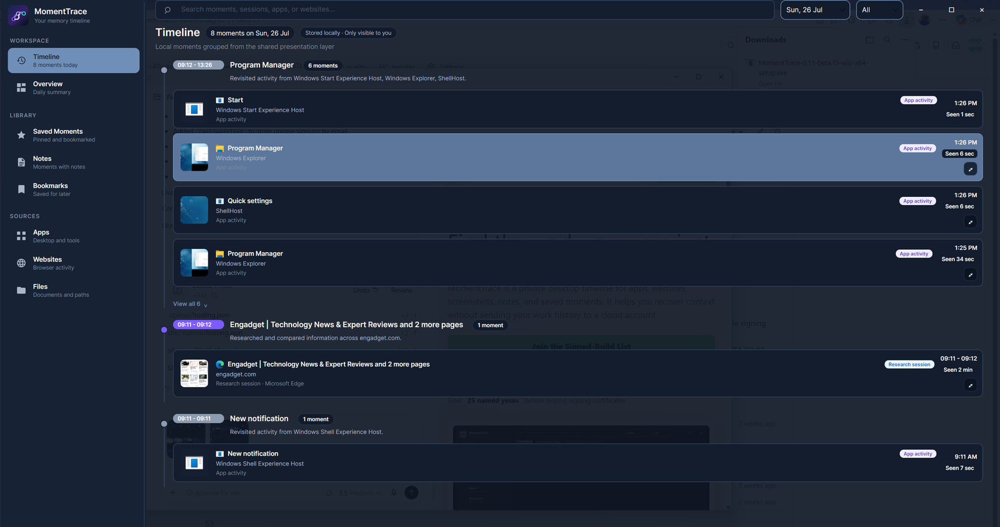

See your workday as a timeline of real app, website, document, and screenshot moments.
Windows and macOS beta now available
Your private memory timeline for the workday.
MomentTrace helps you retrace apps, websites, screenshots, notes, and saved moments from your day, with activity history stored locally on your device.
Local-first. Private by default. Built for people who need to recover context fast.
Recover context without manual tracking.
MomentTrace turns the day into useful moments, then gives you the controls to search, save, revisit, and clean up your history.
Get a visual recap of attention, top apps, focus blocks, activity patterns, and key moments.
Reopen captured websites, folders, and saved work so you can get back to the thing itself.
Keep data local, filter sensitive activity, export or delete history, and clear all local app data.

Find the moment, then get back to the work.
Search or scan through captured activity, save important moments, add notes, and use previews to recognize what you were doing before you reopen the source.
- Capture apps, websites, screenshots, folders, and timestamps.
- Bookmark and pin the moments that matter.
- Use Overview when you want the story of the day instead of a raw event log.
Your timeline belongs on your machine.
The beta stores activity history, screenshots, settings, and privacy filters locally. It does not require a cloud account.
Local storageCaptured data is written under your device's MomentTrace app data folder.
Privacy filtersBlock apps or websites and keep adult-site filtering enabled by default.
Cleanup controlsDelete activity history or clear all local app data when you want a clean slate.
No account requiredThe MVP is fully local and deterministic, with AI provider hooks left off by default.
Try the desktop beta.
Install it, use it for a real work session, then tell us what helped you recover context and what felt too sensitive or noisy.
Beta checklist
Install, complete onboarding, let Timeline run, check Overview, save a moment, open Settings, and inspect privacy controls.
Known release note
The verified-publisher flow is ready, but public installers need a real Windows signing certificate configured in release secrets.